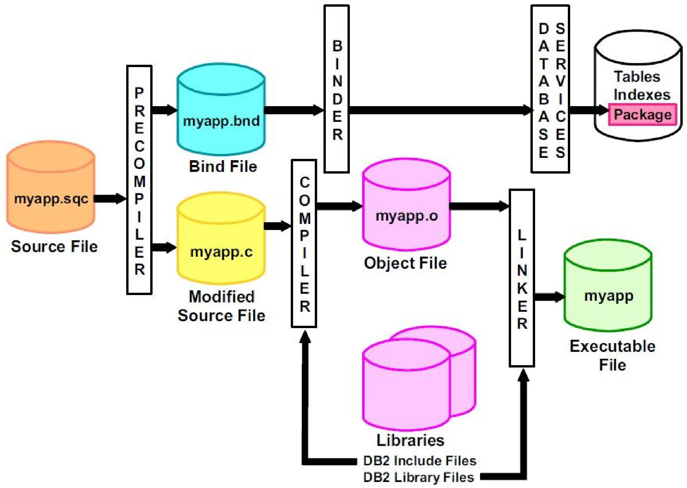

高级SQL
数据库开发从基础应用走向复杂业务实现的关键，涵盖了程序语言与 SQL 的交互、函数与存储过程、触发器、递归查询等核心内容
程序与数据库服务器的交互(Accessing SQL From a Programming Language)
SQL 是数据库的查询语言，但实际开发中，程序（如 Java/C++ 代码）不会直接在数据库终端执行 SQL，而是通过应用程序接口（API） 与数据库服务器交互，通用流程为：
- 建立与数据库服务器的连接；
- 向服务器发送 SQL 命令（查询 / 更新 / 插入等）；
- 将查询结果逐行提取到程序变量中；
- 处理执行过程中的错误。
支持该交互的主流工具分为三类：JDBC、ODBC、嵌入式 SQL。

JDBC（Java Database Connectivity）
JDBC 是一套 Java API，用于与支持 SQL 的数据库系统进行通信。
- 核心操作：增删改查
- 查数据库 “本身的结构”（元数据）:数据库里有哪些表、某张表有哪些字段
Java 程序用 JDBC 连数据库，必须走这四步：
- 连数据库：先和数据库服务器建立连接（输地址、账号密码）；
- 准备 SQL “执行器”：创建一个叫
Statement的对象，专门用来装要执行的 SQL； - 发 SQL + 拿结果：通过
Statement把 SQL 发给数据库，再把返回的结果（比如查询到的用户列表）取回来； - 处理出错情况：如果连不上数据库、SQL 写错了，JDBC 会用 “异常” 告诉你哪里出了问题，方便排查。
ODBC（Open Database Connectivity，开放数据库连接）
ODBC 本质是一套标准化的应用程序接口（API），程序通过调用这些 API 能完成和数据库的全流程交互，核心就三件事：
- 建立连接：通过 API 打开和数据库服务器的连接（输入数据库地址、账号密码），这是所有操作的基础；
- 发送指令：通过 API 把 SQL 查询（比如查数据）、更新（比如改数据 / 删数据）指令发给数据库；
- 获取结果：通过 API 接收数据库返回的执行结果（比如查询到的表格数据、更新是否成功的状态）。
嵌入式 SQL (Embedded SQL)
嵌入式 SQL 是把 SQL 语句直接写到 C、C++、Java 等编程语言（称为宿主语言）代码里的技术，SQL 标准统一规定了它在不同宿主语言中的嵌入规则
标识 SQL 语句：让编译器识别 SQL
通用格式：用
EXEC SQL开头标记嵌入式 SQL 语句，结尾默认用分号（;），如EXEC SQL <SQL语句>;；语言差异：
- COBOL 语言：结尾用
END-EXEC替代分号； - Java 语言：格式改为
#SQL { <SQL语句> };。
- COBOL 语言：结尾用
数据库连接：操作前的必备步骤
执行任何嵌入式 SQL 前，必须先通过以下语句建立程序与数据库的连接：
EXEC SQL connect to server user 用户名 using 密码;
其中server是数据库服务器的标识（如 IP + 端口），这是所有数据库操作的前提。
宿主语言变量的使用：区分程序变量和 SQL 变量
标记规则：程序里的变量（如
credit_amount）在 SQL 中使用时，必须加冒号（:）前缀（如:credit_amount），避免和 SQL 自身的变量混淆；- 声明规则：这类变量必须放在
EXEC SQL BEGIN DECLARE SECTION和EXEC SQL END DECLARE SECTION之间，变量的声明语法遵循宿主语言规则（比如 C 语言用int、Java 用int/String）
EXEC SQL BEGIN DECLARE SECTION;
int credit_amount; -- 宿主语言变量（C语言语法）
EXEC SQL END DECLARE SECTION;
游标（Cursor）—— 处理多行查询结果
宿主语言无法直接接收 SQL 返回的 “多行结果集”，游标相当于 “结果集的指针”，逐行读取数据，核心流程分 4 步：
- 声明游标：绑定要执行的 SQL 查询
语法：EXEC SQL declare 游标名 cursor for <SQL查询>，示例（查询学分超过:credit_amount的学生）：
EXEC SQL
declare c cursor for
select ID, name
from student
where tot_cred > :credit_amount
END_EXEC; -- COBOL结尾，其他语言可用;
作用：把 SQL 查询和游标c绑定，此时不执行查询，仅定义规则。
- 打开游标：执行查询并保存结果
语法：EXEC SQL open 游标名;（如EXEC SQL open c;）；作用：数据库执行绑定的 SQL 查询，把结果存入临时数据集，使用此时宿主变量（如:credit_amount）的当前值。
- 提取数据：逐行读取结果到程序变量
语法：EXEC SQL fetch 游标名 into :变量1, :变量2;（如EXEC SQL fetch c into :si, :sn END_EXEC;）；作用：把临时数据集里的一行数据存入程序变量（si存学生 ID，sn存姓名），重复调用fetch可读取下一行。
终止与关闭：判断结束 + 释放资源
结束标识：SQL 通信区（SQLCA）里的
SQLSTATE变量会被设为'02000'，表示没有更多数据；- 关闭游标：
EXEC SQL close 游标名;（如EXEC SQL close c;），删除临时数据集，释放数据库资源； - 语言差异：Java 中用 “迭代器（Iterator）” 替代游标逐行遍历结果，逻辑一致但语法不同。
嵌入式 SQL 的更新操作：通过游标修改数据
声明可更新的游标：加for update关键字，示例（锁定 Music 系讲师数据）：
EXEC SQL
declare c cursor for
select * from instructor where dept_name = 'Music'
for update;
遍历游标并更新：先通过fetch读取一行数据，再用where current of 游标名定位当前行并修改，示例（给当前行讲师涨薪 1000）：
update instructor
set salary = salary + 1000
where current of c;
SQL 的扩展（Extensions to SQL）
SQL:1999 及各数据库厂商扩展了函数、存储过程等 “过程式” 特性，核心是让 SQL 能处理复杂逻辑、复用代码、提升执行效率
函数（Function）
封装一段可复用的逻辑，执行后返回单个值 / 表对象（表值函数）；
既可以用 SQL 本身写，也能用 C、Java 等外部语言
- 创建：
CREATE FUNCTION，必须指定返回值类型（RETURNS），函数体必须有RETURN语句； - 参数：仅支持
IN类型（输入参数）； - 调用：可直接嵌入查询语句中（如
SELECT/WHERE子句）。
不能执行 insert/update/delete 等更新操作
CREATE FUNCTION <函数名> ([参数,..,参数])
RETURNS <数据类型>
BEGIN
<SQL语句块>
END<终止符>
create function dept_count (dept_name varchar(20)) -- 输入参数：部门名
returns integer -- 返回值类型：整数（讲师数量）
begin
declare d_count integer; -- 声明局部变量存统计结果
select count(* ) into d_count -- 统计指定部门的讲师数，存入变量
from instructor
where instructor.dept_name = dept_name;
return d_count; -- 返回统计结果
end
select dept_name, budget
from department
where dept_count (dept_name) > 12; -- 函数直接用在WHERE子句中
存储过程（Procedure）
封装一段复杂业务逻辑（可包含更新、循环、条件判断），编译后存储在数据库中，调用时直接执行；
- 创建：
CREATE PROCEDURE，无需指定返回值类型； - 参数：支持
IN（输入）、OUT（输出）、INOUT（输入输出），可返回多个值； - 调用：必须用
CALL语句（如CALL 过程名(参数)），不能嵌入查询语句。
CREATE PROCEDURE <存储过程名> ([参数,..,参数]) #参数的格式为:[IN/OUT/INOUT] 参数名 参数数据类型
BEGIN
<SQL语句块>
END<终止符>
DELIMITER // #将数据库的终止符修改为//,因为数据库的默认终止符为分号,为了避免与存储过程中SQL语句块中的终止符(即分号)冲突
CREATE PROCEDURE PROC_COURSE_AVG_ GRADE (IN course_id CHAR(4),OUT avg_grade FLOAT)
BEGIN
SELECT AVG (GRADE) INTO avg_grade FROM SC WHERE Cno=course_id;
END //
DELIMITER; #恢复默认终止符
CALL PROC COURSE AVG GRADE ("1",@avg_grade);
# @ 符号用于表示用户定义的变量。
[!tip]
特性 存储过程 函数 返回值 多值（OUT/INOUT 参数） 单值 / 表（RETURN） 参数类型 IN/OUT/INOUT 仅 IN 调用方式 CALL 独立执行 嵌入 SELECT 等查询 数据操作 可增删改查 仅查询，不可修改 语法要求 无需 RETURN 必须 RETURNS
- 存储过程 = 数据库里的 “小程序”：能改数据、返多值、独立运行，适合复杂业务；
- 函数 = 数据库里的 “计算器”：仅查数据、返单值、嵌在查询里用，适合简单计算 / 查询。
触发器（Trigger）
触发器的本质
触发器就是数据库的 “自动响应机器人”，当有人增 / 删 / 改数据时，它会自动按预设规则干活。
- 自动触发，无需人工干预：由数据库系统自行检测、自行执行的 “后台程序”
- 触发前提：仅在数据库数据被修改时触发：触发器不会无故执行，只有当数据库发生数据修改操作时才会被激活，这里的修改仅指三类核心操作：插入（
insert）、删除（delete）、更新（update） - 本质属性：数据修改的 “附加副作用”：触发器执行的逻辑（比如 “自动累加该学生的总学分”）并不是核心操作本身，而是核心操作带来的附加、连带动作
设计一个可用的触发器，必须完成两个关键配置，缺一不可
- 明确触发条件（“什么时候干活”）
- 这是触发器的 “执行门槛”，需要定义清楚 “满足什么情况什么事件才会启动”，不是只要数据修改就触发。
- 明确触发动作（“具体干什么活”）
- 这是触发器的 “核心业务逻辑”，需要定义清楚 “满足条件后，要执行哪些操作”。比如一条或者多条SQL语句
[!tip]
- 触发器本质：数据库数据修改（增 / 删 / 改）时自动执行的 “附加逻辑程序”，无需手动调用；
- 设计核心：必须同时明确 “触发条件”（执行门槛）和 “触发动作”（业务逻辑）；
触发器的触发前提是数据库发生数据修改操作，仅支持三种核心事件，无其他额外触发类型：insert、delete、update
其中普通update触发器会在表的任意字段被修改时触发，而我们可以对其进行精准限制，仅当指定字段被修改时才激活触发器
#仅当takes表（学生选课成绩表）的grade字段（成绩字段）被更新后，该触发器才会执行
after update of takes on grade
新旧数据的引用规则
触发器支持引用数据修改前后的字段值，用于条件判断或业务计算，不同操作对应不同的引用方式，规则固定：
| 触发事件 | 可引用的数据 | 引用语法 | 用途 |
|---|---|---|---|
delete |
仅旧数据（删除前的行数据） | referencing old row as 别名（如 orow） |
记录被删除的数据、做删除前校验 |
insert |
仅新数据（插入后的行数据） | referencing new row as 别名（如 nrow） |
校验插入的数据、基于插入数据更新关联表 |
update |
旧数据（更新前）+ 新数据（更新后） | 旧数据：referencing old row as 别名新数据：referencing new row as 别名 |
对比数据变化（如工资是否上涨）、基于变化执行逻辑 |
两大触发时机：before vs after
before（事件执行前触发）作为额外的数据约束 / 数据预处理，在数据正式写入 / 修改到数据库前，对数据进行校验或修正，保证数据合法性。
示例：将空白成绩（
''）自动转为null（避免脏数据存入数据库），对应setnull_trigger触发器。create trigger setnull_trigger before update of takes -- 触发时机：更新takes表之前 referencing new row as nrow -- 引用更新后的行数据（别名nrow） for each row -- 行级触发：每更新一行数据就执行一次 when (nrow.grade = ' ') -- 触发条件：更新后的grade字段是空白字符串 begin atomic -- 原子执行：要么全部成功，要么全部回滚 set nrow.grade = null; -- 触发动作：将空白成绩转为null end;
after（事件执行后触发）- 维护关联数据、记录审计日志，在数据已经成功修改后，执行连带的业务逻辑，不影响原数据的修改操作。
- 示例：学生成绩从不及格转为及格后，自动累加对应课程学分，对应
credits_earned触发器。
create trigger credits_earned after update of takes on (grade) -- 触发时机：takes表的grade字段更新后 referencing new row as nrow -- 新数据：更新后的成绩行 referencing old row as orow -- 旧数据：更新前的成绩行 for each row -- 行级触发：逐行处理成绩更新 -- 触发条件：从“不及格/无成绩”转为“及格” when nrow.grade <> 'F' and nrow.grade is not null and (orow.grade = 'F' or orow.grade is null) begin atomic -- 触发动作：累加对应课程的学分到学生总学分 update student set tot_cred= tot_cred + (select credits from course where course.course_id= nrow.course_id) where student.id = nrow.id; end;
两种触发范围：行级触发 vs 语句级触发
触发器按执行粒度分为两种，适用于不同数据量场景，效率差异明显：
- 行级触发：
for each row（默认常用）- 对每一条受修改操作影响的行，都独立执行一次触发器逻辑；
- 语句级触发：
for each statement- 无论多少行数据受影响，仅对整个修改语句执行一次触发器逻辑；
核心用途
- 保障数据完整性：
- 通过触发器补充数据库基础约束的不足，确保存入 / 修改后的数据库数据是合法、一致、完整的，避免脏数据（无效 / 混乱数据）产生。
- 插入前校验；更新或者删除时的级联操作
- 实现数据审计：
- 通过触发器自动跟踪数据库中数据的变化轨迹，留存完整的修改痕迹，同时校验数据变化是否符合业务规则，确保业务数据的正确性与合理性，便于后续追溯问题、排查责任。
- 日志
- 强化数据安全性
- 通过触发器实现 “场景化安全校验”，补充数据库传统账号权限的不足，限制非法数据操作，保障核心业务数据的安全。
- 实现数据备份与同步
- 当数据发生增、删、改操作时，触发器自动触发数据备份或跨表 / 跨库同步操作，无需人工手动干预，避免数据丢失，同时保证多表 / 多库数据的一致性。
触发器有上述核心作用，但是下面有些情况不应该使用触发器
- 对于维护汇总数据（实时统计聚合信息）：替代方案 - 物化视图（Materialized View）
- 实现数据库复制（主从 / 多库数据同步）：替代方案 - 数据库原生复制功能
- 同时封装更新方法替代了多数触发器场景：手动定义专门的 “字段更新方法”，将触发器动作封装到该更新方法中
递归查询（Recursive Queries）
递归查询（Recursive Queries）是 SQL 的高级特性（SQL:1999 正式纳入标准），核心用于解决层次化数据和传递闭包问题
递归查询就是 “查询结果可以反复调用自身” 的查询方式，像 “循环解题” 一样：
- 先获取基础数据（初始条件），再用基础数据的结果作为新的输入，反复迭代，直到满足终止条件，最终得到完整结果。
- 处理有层级关系或传递关系的数据
传递闭包（Transitive Closure，层次传递闭包）
- 这是递归查询最核心的应用场景，指 “从直接关系推导出自接（间接）关系的完整集合”。
SQL:1999 这个官方标准，正式支持「递归视图」的定义，对于递归视图的内容可以看04_SQL进阶中的视图
对于找出某一门特定课程的所有先修课程，需要使用递归查询
-- 1. 定义递归公用表表达式（递归视图）rec_prereq
WITH RECURSIVE rec_prereq(course_id, prereq_id) AS (
-- 第一部分：非递归查询（基础查询/初始条件）
SELECT course_id, prereq_id
FROM prereq
-- 连接非递归查询和递归查询（UNION自动去重，UNION ALL效率更高）
UNION
-- 第二部分：递归查询（自我调用，推导间接关系）
SELECT rec_prereq.course_id, prereq.prereq_id
FROM rec_prereq, prereq -- 递归自连接：递归结果与原始先修表连接
WHERE rec_prereq.prereq_id = prereq.course_id -- 递归关联核心条件
)
-- 2. 查询递归视图的最终结果（所有直接+间接先修关系）
SELECT *
FROM rec_prereq;
WITH RECURSIVE：SQL:1999 中定义递归视图 / 公用表表达式（CTE）的核心关键字，标志着后续定义的是递归结构；
这个递归视图rec_prereq，被称为prereq关系的「传递闭包」（这是理解递归查询的核心概念）。
prereq表（原始关系）：仅存储「直接关系」（A→B、B→C、C→D）；- 传递闭包（
rec_prereq视图）：存储「所有直接关系 + 所有间接关系」的完整集合（A→B、A→C、A→D、B→C、B→D、C→D）； - 从 “直接关联” 推导 “间接关联”，完整覆盖层级化的传递关系，这正是递归查询的本质作用。
[!note]
普通非递归查询的本质局限：无法适配任意层级的传递关系，层级数超过预设的连接次数后，查询就会失效
递归视图使得某些查询（例如传递闭包查询）的编写成为可能，而这类查询离开递归或迭代是无法实现的。
递归视图必须满足单调性约束，这是 SQL 标准对递归视图的强制要求，目的是保证迭代能稳定收敛到唯一的不动点。
- 单调性的具体定义是：当我们向原始关系
prereq表中添加新的元组（行数据，比如新增一门课程的直接先修关系）时，递归视图rec_prereq的结果集只会保持不变或增加新的元组，绝不会减少原有已存在的元组，但是可能会增加